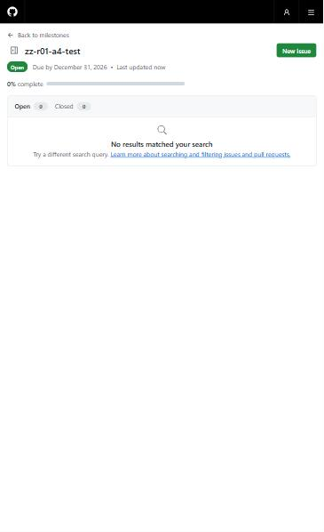

수용 기준 13개가 모두 통과했다. 배포된 서버로 실제 GitHub에 만든 마일스톤의 마감일이 응답과 웹 화면 모두 2026-12-31이었다.
통과 13미달 0미확인 0
정해야 할 것: 없음
| 태스크 | T01_01 |
|---|---|
| 확인한 날짜 | 2026-11-25 |
| 확인한 커밋 | ac24e4f(R01-A4는 이 커밋을 배포한 Bizadm MCP 서버로 확인) |
| 차수 | 2 |
| ID | 기준 | 결과 | 근거 |
|---|---|---|---|
| R01-A1 | 목록 Tool이 준 값만 쿼리로 보내고 응답을 그대로 반환한다 | 통과 | ListMilestones_SendsGivenQueryAndReturnsResponse(쿼리 5개 순서대로, 본문 null, 반환 같음), ListMilestones_NoOptions_SendsWithoutQuery(쿼리 없음) 통과. |
| R01-A2 | 조회 Tool이 GET .../milestones/3을 보낸다 | 통과 | GetMilestone_GetsByNumberAndReturnsResponse 통과. |
| R01-A3 | 생성 Tool이 준 값만 본문에 담는다(due_on은 UTC 정오) | 통과 | CreateMilestone_PostsOnlyGivenFields: 본문이 기대 문자열과 글자까지 같음. |
| R01-A4 | 배포된 서버로 dueOn=2026-12-31 마일스톤을 만들면 응답과 GitHub 화면의 마감일이 모두 2026-12-31이다 | 통과 | 실제 MCP 호출로 만든 마일스톤의 응답 due_on이 2026-12-31T00:00:00Z, 웹 화면이 Due by December 31, 2026, 삭제 반환이 {"deleted":{"milestoneNumber":1}}. |
| R01-A5 | 수정 Tool이 준 값만 보내고 clear 플래그는 null로 보낸다 | 통과 | UpdateMilestone_PatchesOnlyGivenFields, UpdateMilestone_ClearFlags_SendNull 통과. |
| R01-A6 | 삭제 Tool이 DELETE 뒤 {"deleted":{"milestoneNumber":3}}을 반환한다 | 통과 | DeleteMilestone_ReturnsDeletedNumber(204) 통과. |
| R01-A7 | 입력 오류마다 계약의 문구로 실패하고 요청이 0건이다 | 통과 | InvalidInput_ThrowsWithoutRequest 데이터 행 전부(공통 오류 5 Tool 각각, 목록·생성·수정 오류) 통과. 실패한 Task로 전달됨도 확인. |
| R01-A8 | 404 오류가 기존 형식이고 Token이 없다 | 통과 | GitHubError_UsesExistingFormatWithoutToken 통과. |
| R01-A9 | 다섯 Tool 등록, 힌트, 입력 스키마가 설계와 같다 | 통과 | WithGitHubTools_RegistersGatewayAndRefTools, WithGitHubTools_MilestoneToolAnnotationsAndSchemaMatchDesign 통과. |
| R01-A10 | README 제공 Tool 표·절·등록 소개문·권한 줄이 맞다 | 통과 | grep 1: 표 줄(206)과 절 제목(1943). 2: 절 표에 다섯 Tool 각 한 줄(1949~1953, 설명 줄 1956에도 github_update_milestone 언급이 한 번 더 있음). 3: 소개문(115)에 "마일스톤 5개". 4: 권한 줄(1958)에 Issues·Pull requests와 "미확인". |
| R01-A11 | 목록 오류 메시지에 쿼리가 없다 | 통과 | ListMilestones_GitHubError_MessageHasNoQuery: 메시지에 ? 없음, 실제 요청에는 ?state=all이 나감. |
| R01-A12 | 200 빈 본문이면 returned no content. 오류다 | 통과 | GetMilestone_EmptyBody_ThrowsNoContent 통과. |
| R01-A13 | 대문자 값 목록 입력을 요청 없이 거부한다 | 통과 | UppercaseChoice_IsRejectedWithoutRequest 통과. |
dotnet build Biz.Bizadm.MCP.ToolKit.slnx: 경고 0, 오류 0, 끝 코드 0. dotnet test tests/Biz.Bizadm.MCP.ToolKit.Tests/Biz.Bizadm.MCP.ToolKit.Tests.csproj: 끝 코드 0, 전체 727, 통과 716, 실패 0, 건너뜀 11(기존 Windows 아닌 환경용 저장소·디스크 테스트). GitHubMilestoneToolsTests는 62건 모두 통과. 메인 에이전트가 같은 명령을 다시 실행해 같은 결과를 봤다.
사용자가 배포를 알리고 Bizadm MCP 연결을 다시 맺은 뒤, 사용자 승인을 받아 다음 순서로 확인했다.
mcp__Bizadm_MCP__github_list_milestones(state=all): []. 같은 이름의 마일스톤이 없음.mcp__Bizadm_MCP__github_create_milestone(instance=SeongSikChaeGitHub, owner=SeongSikChae, repo=Biz.Bizadm.MCP.ToolKit, title=zz-r01-a4-test, dueOn=2026-12-31): number 1, state open, description null, due_on 2026-12-31T00:00:00Z. 보낸 시각(UTC 정오)은 GitHub가 버리고 날짜만 남겼다.https://github.com/SeongSikChae/Biz.Bizadm.MCP.ToolKit/milestone/1: 화면에 Due by December 31, 2026(아래 화면 확인).mcp__Bizadm_MCP__github_delete_milestone(milestoneNumber=1): {"deleted":{"milestoneNumber":1}}.mcp__Bizadm_MCP__github_list_milestones(state=all): []. 지워진 것을 확인.이 확인으로 생성·삭제가 인스턴스 Token 권한으로 된다는 것도 보았다. 다만 Issues·Pull requests 권한 가운데 무엇이 쓰였는지는 알 수 없다. description·due_on을 null로 보내 지우는 동작은 실제로 호출하지 않았다.

net10.0), MSTest, Git Bash.ac24e4f를 배포한 Bizadm MCP 서버, 인스턴스 SeongSikChaeGitHub, 저장소 SeongSikChae/Biz.Bizadm.MCP.ToolKit, Claude 데스크톱 내장 브라우저.zz-r01-a4-test(번호 1)는 지웠고 저장소 마일스톤 목록은 비어 있다.